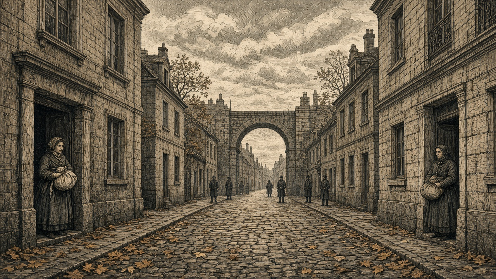

緑丘の現代都市ノルミア陥落
オリョルッル軍が占領
開戦3期、歩兵部隊相次ぎ壊滅 兵站陥落、予備兵1,000人投降

【総合部】オリョルッル王国軍は第137期、緑丘公国の現代都市ノルミア（18,49）を占領した。第135期の開戦から、王国軍は緑丘軍の歩兵部隊を相次いで撃破し、ついに公国の都市を奪った。兵站拠点も王国軍の手に落ち、予備兵1,000人が投降した。首都緑丘（16,46）はなお公国の支配下にある。
3期の戦果は王国軍27,700人、緑丘軍8,900人。王国軍が18,800人上回った。都市陥落の報せが伝わった公国内では、首都に迫る戦火への不安が広がっている。
王国軍、ノルミアへ進入 街に占領軍の旗
「王国軍が来たぞ！」。ノルミアの門に兵士が現れると、通りには叫び声が響いた。商店の戸が閉められ、人々は家の中へ駆け込んだ。荷物を抱えて町を離れようとする住民もいた。
「昨日までは緑丘の町だったんだ。どうして今日から王国の旗が立つんだ」。市場の商人は門を見つめた。「家も店もここにある。兵隊が来たからって、簡単に別の国の人間になれるものか」
荷物を布に包んだ女性は子供の手を握った。「首都へ逃げればいいのか、それともここに残るべきなのか。何も分からないんです」。街の領有は変わっても、そこに暮らす人々の家と仕事は残る。
兵站拠点も陥落 予備兵1,000人が投降
ノルミアと同じ第137期、緑丘軍の兵站拠点も占領された。そこにいた予備兵1,000人は王国軍に投降した。兵站は前線への補給と兵員の補充を支える施設であり、その喪失は緑丘軍の立て直しに痛手となる。
「前線で兵が減れば、後ろから補充が来るはずだった。その場所まで敵に取られた」。緑丘兵は補給路への不安を口にした。王国軍は都市と軍事施設を相次いで奪い、公国の防衛を揺さぶっている。
開戦3期、王国軍が全期で戦果上回る
第135期の戦果は王国軍11,900人、緑丘軍2,900人。第136期は王国軍5,000人、緑丘軍2,000人。第137期は王国軍10,800人、緑丘軍4,000人だった。王国軍は装甲兵と歩兵で攻勢を続け、緑丘歩兵部隊の消滅が相次いだ。詳報は2面。
首都緑丘は公国領 兵力49,800人に
首都緑丘はなお公国が保持している。人口は第135期27,800人、第136期28,100人、第137期28,400人と増えた。公国軍の兵力は67,800人から49,800人へ減り、領地は15区画から14区画となった。国庫は18,379億円、食料910,800トン。働き手は39,700人不足する。
「ノルミアが取られたと聞いて、次はここだと思った。でも家族も仕事も残っている」。雨の首都で、商人は濡れた店先の戸を開けた。
青海、黒潮も王国と開戦 戦争拡大
第136期には青海共和国、第137期には黒潮自治国が相次いでオリョルッル王国と開戦した。王国は緑丘戦線で優位に立つものの、交戦相手は増えている。王国の人口は942,000人、兵力557,300人、領地332区画、国庫12,809億円。
「緑丘の町を取ったと聞いたばかりなのに、青海も黒潮も戦争か」。王国の商人は言う。「戦いが広がれば、商いだって落ち着かない」
黒潮、焦土戦術か フィルノアを自ら整地
黒潮自治国は第137期、自国の現代都市フィルノア（19,18）を整地し、平地に変えた。カペレナ王国の戦艦は第135期から3期続けて同地を砲撃。第137期には王国歩兵の攻撃で黒潮第1方面軍歩兵が消滅し、その後、黒潮側が都市を整地した。敵軍に都市を利用させないための焦土戦術だった可能性がある。
「砲で町が壊されるのは何度も見てきた。でも最後に町を平らにしたのは、こちらの政府だった」。元住民は旧市街を見つめた。黒潮の人口は2,800人。政府はネルヴェナを首都と称している。焦土戦術としての意味と住民への影響は3面。
ノルミアはオリョルッル王国の占領下となった。緑丘の首都は残っているが、3期に及ぶ戦いで歩兵部隊が相次いで失われ、兵站拠点も奪われた。予備兵1,000人が投降した。
ノルミアでは、店の戸を閉めた商人が占領軍の旗を見上げ、荷物を抱いた家族が行き先を探している。占領を終えた王国軍には、こうした住民の安全を守る責任がある。
フィルノアでは別の事態が起きた。王国の艦砲射撃が続き、守備部隊が消滅した後、黒潮政府は自国の都市を整地した。敵軍への利用阻止を狙った焦土戦術だったのか。黒潮は王国軍の攻撃が続く中、自ら街を平地にした。敵軍に奪われたノルミアと、自ら平地にしたフィルノア。どちらの町にも、そこで暮らした人々がいた。
都市を守るとは旗を守るだけではない。人々が明日も暮らせる土地を守ることだ。